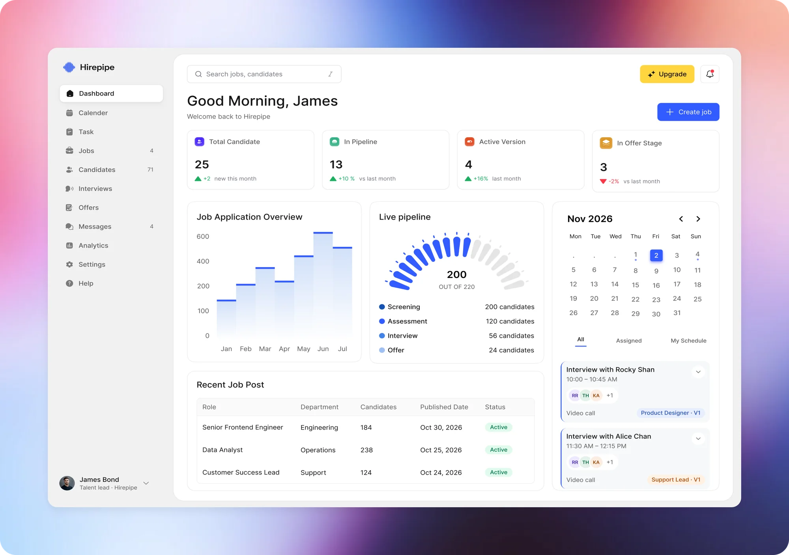

Project Overview
Most applicant-tracking tools treat a job post as a single, static record. But in the real world a role is rarely hired for just once — it reopens, the salary shifts, the interview process changes, and each run attracts a different set of candidates. Editing one static post to reflect those changes quietly corrupts the history of everyone already in the pipeline.
HirePipe is a concept exploring a different model: a job isn't one record, it's a living draft plus a growing stack of frozen versions. The design challenge was to make that power feel simple — navigable, unambiguous, and safe — at enterprise scale.
(UX + UI)
UI, design system
& system design
The Problem
A job post is not a static entity:
I kept running into the same structural tension when I mapped how recruiters actually work
- Roles repeatThe same position is published again and again over months, each time with tweaks to salary, requirements, or the hiring pipeline.
- Candidates get strandedEditing a live post to make those tweaks scrambles the people already mid-process — their stage, notes, and what they applied to.
- History disappearsOverwriting a post erases the ability to compare cycles — which version attracted better candidates, where people dropped off.
How do you let a role evolve freely over time, without ever disturbing the candidates already inside it?
Research & insights
Understanding how recruiters really work
I studied how established hiring platforms structure pipelines and reposting, and mapped the recurring behaviours into a few insights that shaped the whole system.
Stages get renamed and reordered constantly, so the system can't rely on stage names to stay consistent.
Recruiters think in "rounds" — the closest real pattern to versions is reopening a requisition.
Candidate records are kept for comparison, audit, and compliance — deletion is rarely acceptable.
Competitor analysis
Grounded in how the category actually works
The model isn't invented from nothing — its building blocks exist, scattered, across real platforms. HirePipe unifies them into one explicit version-snapshot system.
Groups renamed stages under a standard type for consistent reporting. The real-world precedent for stable stage identity.
When you delete a live-pipeline stage that holds candidates, it asks where to move them — the pipeline-evolution edge case in practice.
Structured pipelines and per-stage analytics — the inspiration for the distribution strip and version-level reporting.
Who it's for

Design opportunities
Four problems to design around
Let a job carry unlimited versions while keeping a single, calm screen.
Compare the same stage across versions even as labels change.
Clearly distinguish drafts, published items, and archived content.
Changing a role must never endanger candidates already in it.
User flow
From draft to a frozen hiring cycle
The spine of the product is a simple loop: shape a draft, publish it into a frozen version, manage candidates inside that version — and when the role needs to change, edit the draft and publish again as the next version.

The decisions that mattered
Designing the versioning model
Every choice below traces back to a usability principle — the goal was power that stays legible under pressure.
1 · One editable draft, many frozen versions
Borrowing from version control, there is exactly one editable draft. Publishing takes an immutable snapshot of the job + pipeline — that becomes V1, V2, V3. Candidates are tied to the version they applied to, never to the job itself, so editing the draft or publishing again can never disturb anyone mid-process.

2 · A single version switcher
A job can carry ten versions, but only one board shows at a time. Versions sit as small pills; selecting one swaps the whole board. The screen stays calm no matter how long the history grows — you recognise and pick rather than hold everything in your head.

3 · Publishing is a confirmation, not a form
All job and pipeline edits happen on the safe draft. Publishing just freezes it — so the publish step shows exactly what's about to be sealed (a snapshot preview + a diff versus the last version) and whether to archive the current live cycle. An irreversible action is never taken blind.

4 · Draft, Published, Archived — never ambiguous
Three states, colour-coded and consistent everywhere: Draft (amber, editable), Published (green, live), Archived (gray, closed). Archived boards are read-only, guarding the candidates of a finished cycle. The user never has to guess what's live.

5 · Candidates on a board that matches the mental model
Each stage is a column, each candidate a card, moved by drag. A distribution strip reads the version's health at a glance, and a detail panel shows a candidate's timeline and feedback. Rejecting never deletes — it tags and preserves, so a wrong call is always recoverable.

Outcome
As a concept, success was about whether the model stays legible and safe under real complexity. Measured against the problems I set out with: